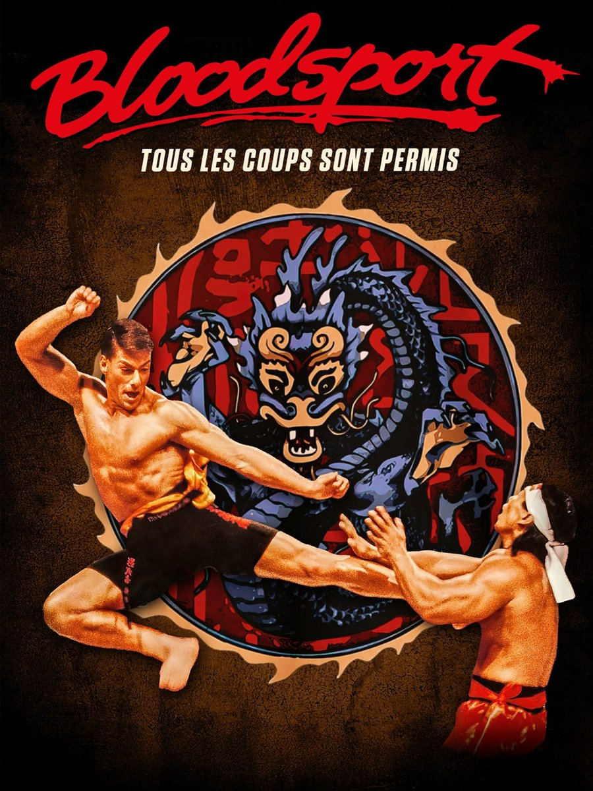
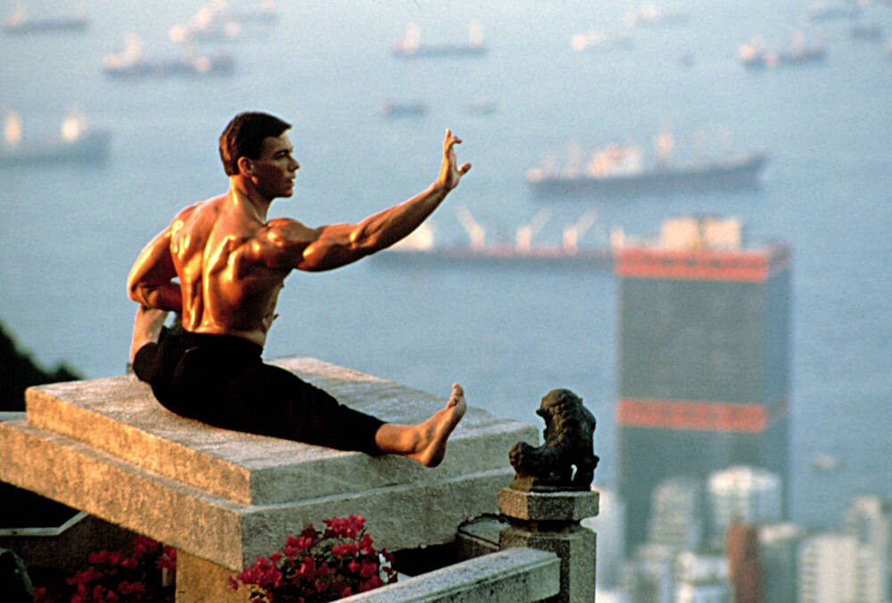
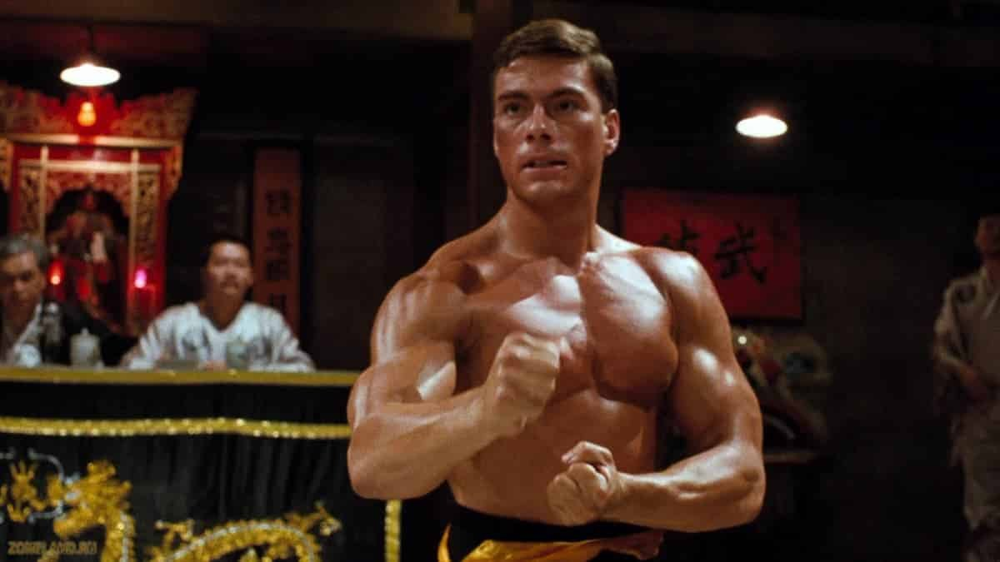

J'avais environ douze ans. Un lundi soir sur M6, un film de Jean-Claude Van Damme a attiré mon attention. M6 l'annonçait sous le titre « Tous les coups sont permis ». La pub m'avait donné envie, alors j'ai programmé le magnétoscope pour ne rien rater.
Il m'a fallu attendre le mercredi après-midi pour pouvoir lancer la cassette. Et là, je me suis pris une claque monumentale.
Un tournoi interdit. Le combat pour l'honneur d'un maître. Une amitié. Un adversaire de taille. Un homme pourchassé pour avoir déserté. Des combats spectaculaires, et bien d'autres choses encore. Voilà ce que j'ai découvert ce jour-là.
Je n'ai connu le titre original que plus tard, quand j'ai ajouté la jaquette Télé K7 sur la cassette : il y était écrit Bloodsport.
Ce soir, on retourne au Kumite.

L'affiche de Bloodsport, tous les coups sont permis
Bloodsport, sorti en France sous le titre « Bloodsport, tous les coups sont permis », est un film d'action américain de 1988, réalisé par Newt Arnold. Il est sorti aux États-Unis le 26 février 1988 et dure 92 minutes. Le scénario est de Christopher Cosby, Mel Friedman et Sheldon Lettich, qui signe aussi l'histoire. Les producteurs sont Mark DiSalle, Yoram Globus et Menahem Golan, pour Cannon Films.
Jean-Claude Van Damme joue Frank Dux. Donald Gibb joue Ray Jackson, Leah Ayres Janice Kent, Norman Burton l'agent Helmer et Forest Whitaker l'agent Rawlins. Roy Chiao est Senzo Tanaka, Philip Chan le capitaine Chen, et Bolo Yeung Chong Li.
Le point de départ : un capitaine de l'armée américaine, formé au ninjutsu, part sans autorisation à Hong Kong pour participer au Kumite, un tournoi de combat illégal. Deux agents sont envoyés à ses trousses.
Le film est tourné entièrement à Hong Kong, à partir du 17 octobre 1986. La musique est de Paul Hertzog. Les chansons « Fight to Survive » et « On My Own » sont de Stan Bush, mais ses versions ont été remplacées sur la bande originale par des enregistrements de Paul Delph.
Tout part de Frank Dux. Ses affirmations, publiées dans le magazine Black Belt en novembre 1980, servent de base au scénario. Sheldon Lettich, qui signe l'histoire, dira plus tard que Dux avait inventé son palmarès, et peut-être le Kumite lui-même.
Le film est produit par Mark DiSalle, Yoram Globus et Menahem Golan, pour Cannon. DiSalle cherchait « une nouvelle star des arts martiaux, un séducteur ». Ce sera Jean-Claude Van Damme, alors figurant et cascadeur pour Cannon, qui a supplié Menahem Golan de lui donner le rôle.
Le tournage commence le 17 octobre 1986, entièrement à Hong Kong : c'est le premier long métrage américain entièrement tourné là-bas depuis 1969. On y voit notamment la Kowloon Walled City, l'hôtel Peninsula, Causeway Bay, le Hong Kong Trail, Victoria Peak et Stanley Fort. Les combats sont chorégraphiés par Frank Dux et le cascadeur hongkongais Lee Ka-ting. Les documents promotionnels situaient le Kumite de 1975 aux Bahamas.
Le budget est de 1,5 à 2,3 millions de dollars. Le film sort le 26 février 1988. Selon le Chicago Tribune, il rapporte 50 millions de dollars dans le monde, dont 15 millions aux États-Unis et au Canada : c'est le film le plus rentable de Cannon en 1988.
Warner le sort en VHS et Betamax le 21 décembre 1988, et en vend environ 150 000 exemplaires en quelques mois. Paul Hertzog, compositeur de Bloodsport, signera aussi la musique de Kickboxer.

Jean-Claude Van Damme dans Bloodsport
Frank Dux est capitaine de l'armée américaine. Il pratique le ninjutsu depuis l'enfance, auprès de son sensei Senzo Tanaka.
Invité au Kumite, un tournoi de combat illégal à Hong Kong, il part sans autorisation, avec deux agents à ses trousses. Là-bas, il se lie d'amitié avec Ray Jackson, un combattant américain. Les deux hommes entrent ensemble dans l'arène, au milieu de combattants venus du monde entier.
Face à eux, un adversaire : Chong Li, champion du Kumite.
Je m'arrête là : la suite se découvre à l'écran.
Bloodsport tient en peu de choses : un tournoi clandestin, un héros qui a quitté l'armée sans permission, un adversaire à affronter.
L'action est au premier plan. Les combats sont chorégraphiés par Frank Dux et Lee Ka-ting, dans les décors de Hong Kong, jusque dans la Kowloon Walled City.
C'est le premier rôle principal de Jean-Claude Van Damme. Il y trouve la place qui lancera sa carrière.
Le film reste contesté : l'histoire vraie de Frank Dux, d'après Sheldon Lettich, serait en grande partie inventée.
La critique de l'époque est sévère : 48 % sur Rotten Tomatoes (31 critiques) et 29/100 sur Metacritic (5 critiques). Van Damme est nommé aux Golden Raspberry Awards, dans la catégorie Pire nouvelle star. Jack G. Shaheen, dans Reel Bad Arabs, reproche au film son portrait des Syriens.
Il est pourtant devenu un classique culte, et on lui attribue une influence sur le MMA.
Mon avis : l'énergie et les combats y sont incroyables. C'est pour ça que je le revois chaque année.

Jean-Claude Van Damme en position de combat
À sa sortie, la critique ne l'a pas épargné. Pourtant, Bloodsport est resté.
Il a d'abord trouvé son public. Pour un budget de 1,5 à 2,3 millions de dollars, il rapporte 50 millions dans le monde selon le Chicago Tribune (le Los Angeles Times évoquait 11,7 millions aux États-Unis en janvier 1989). C'est le film le plus rentable de Cannon en 1988.
La VHS a suivi : Warner le sort en VHS et Betamax le 21 décembre 1988, et en vend environ 150 000 exemplaires en quelques mois.
Il est devenu un classique culte. Quatre suites ont été tournées sans Van Damme, et A24 a annoncé en 2026 un remake écrit et réalisé par Michaela Coel.
Sa musique a suivi le même chemin : un CD en édition limitée chez Perseverance Records en 2007, puis les disques picture de Waxwork Records en 2021.
Pour moi, une cassette, un mercredi après-midi, et une claque monumentale.
Parce que c'est un film d'action sans détour : un tournoi, un héros, un adversaire. Il tient en 92 minutes, et on sait où l'on va dès le début.
Parce que Hong Kong vaut le détour. Le film y est tourné entièrement : la Kowloon Walled City, démolie en 1993, l'hôtel Peninsula, Victoria Peak.
Parce que c'est le premier rôle principal de Van Damme, avec des combats chorégraphiés par Frank Dux et Lee Ka-ting, et un film auquel on attribue une influence sur le MMA.
Parce que le mystère reste entier : l'histoire vraie de Frank Dux est contestée, et c'est une raison de plus de revoir le film.
Et parce que certains films se retrouvent comme on retrouve une cassette : on appuie sur lecture, et on est de nouveau un mercredi après-midi, à douze ans.
Bloodsport n'est pas le film le mieux noté de son époque, et la critique ne l'a pas épargné. Mais il a trouvé son public, et il l'a gardé.
Pour moi, tout commence un lundi soir sur M6, avec un film de Van Damme annoncé sous le titre « Tous les coups sont permis ». J'avais environ douze ans. J'ai programmé le magnétoscope, attendu jusqu'au mercredi après-midi, et je me suis pris une claque monumentale.
Je l'ai revu depuis, et je le regarde encore au moins une fois par an. Je l'aime toujours autant : l'énergie et les combats y sont incroyables. Et à chaque visionnage, il y a ce mystère Frank Dux qui réapparaît.
La cassette est dans le lecteur. On rembobine.
Titre original
Bloodsport
Pays
États-Unis
Genre
Action · Arts martiaux
Durée
92 min
Producteur
Mark DiSalle · Yoram Globus · Menahem Golan (Cannon Films)
Avec aussi
Donald Gibb · Bolo Yeung · Forest Whitaker
Musique
Paul Hertzog
Note
Un lundi soir sur M6, une cassette le mercredi
SOMEDAY — S3 EP. 05